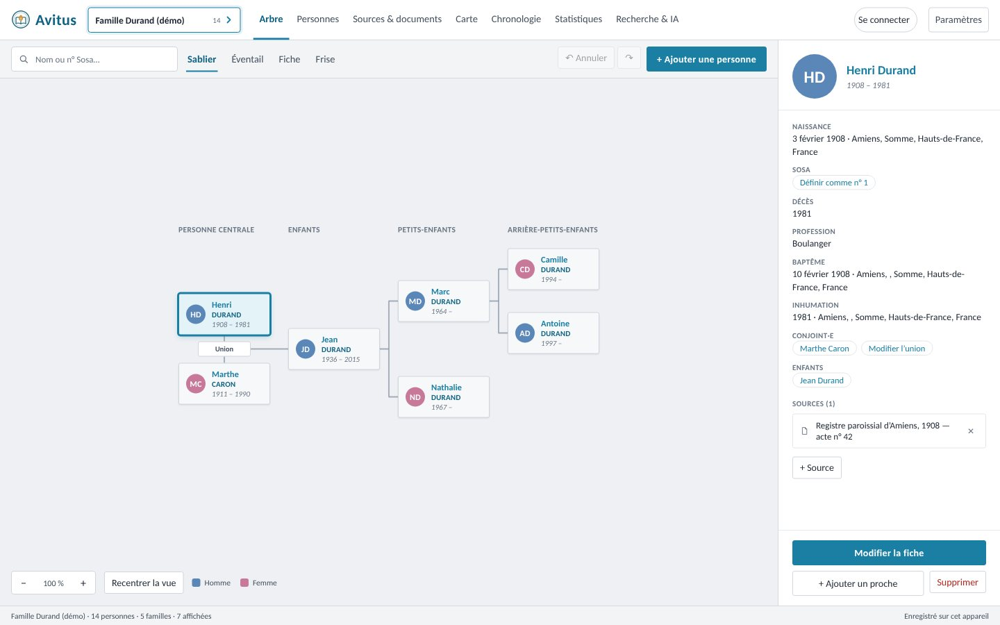
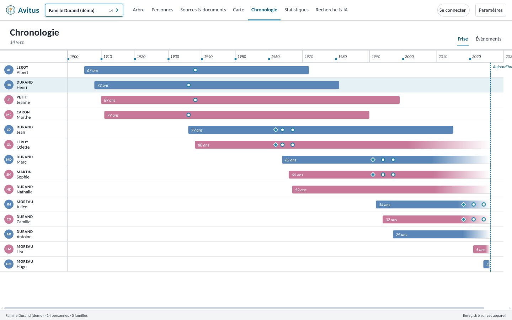
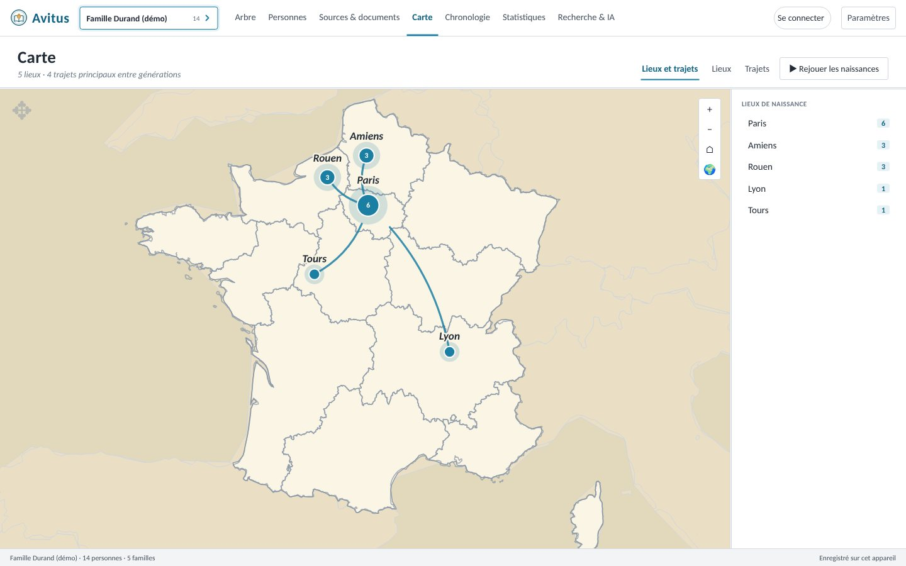
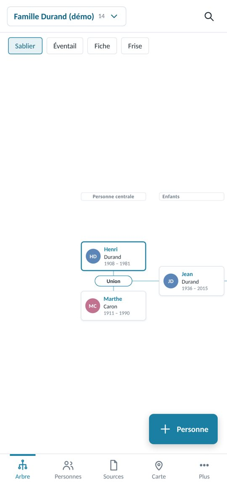
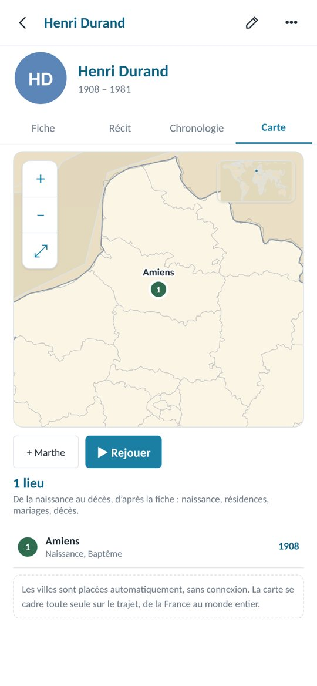
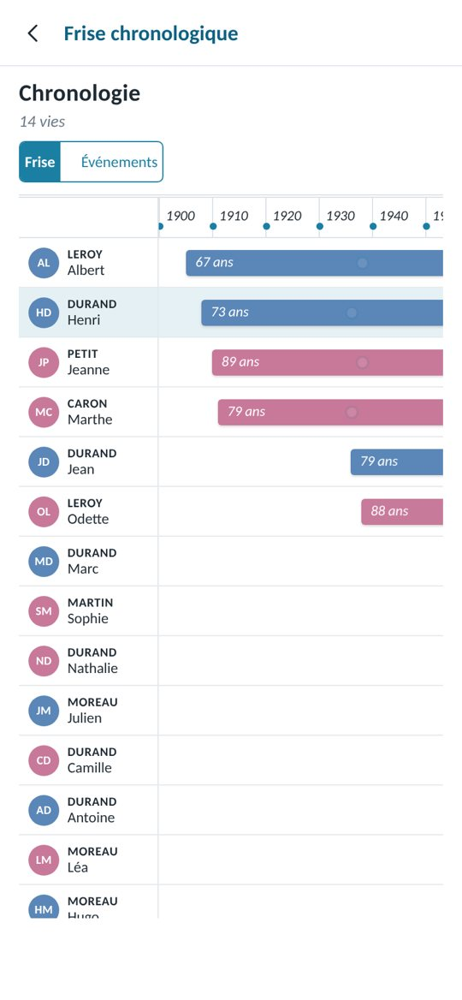

Construis ton arbre, ajoute les photos et les preuves, découvre où et quand ils ont vécu. Sur ton PC, ton téléphone et dans le navigateur, toujours à jour.
Gratuit · sans abonnement · Windows, Android et web

Des outils simples pour les débutants, assez complets pour les passionnés.
Sablier, ascendance, éventail : navigue d’un clic entre les générations, avec photos et numéros Sosa.
Dates, lieux, événements, notes et sources rattachées pour garder la preuve de chaque information.
Les lieux et trajets de la famille sur une carte, et qui a vécu en même temps sur une frise.
PC, téléphone et navigateur restent à jour. Tu peux travailler hors connexion, la synchro se fait au retour du réseau.
Invite un proche en lecture ou en modification, ou envoie un lien sans compte : les personnes vivantes y sont masquées.
Chaque mois, un e-mail avec les anniversaires et les nouveautés de l’arbre.
La frise met toutes les vies sur une même ligne de temps. On voit d’un coup d’œil les grands-parents qui ont connu leurs petits-enfants.

La carte place les lieux de naissance, de mariage et de décès, et trace les trajets d’une génération à l’autre. Tu peux même rejouer les naissances dans l’ordre.

L’application Android reprend l’essentiel : arbre, fiches, photos, carte, recherche et synchronisation avec ton PC.



Compte une vingtaine de minutes pour la première fois. Le guide en PDF détaille chaque étape, avec des captures.
Télécharge Avitus pour Windows ou Android, ou ouvre le site. Crée ton profil et note ton code de récupération.
Importe ton fichier GEDCOM depuis Geneanet, ou pars de zéro avec les premières personnes.
Sablier, ascendance, carte, chronologie, statistiques : complète au fil des découvertes.
Invite un proche ou envoie un lien. Newsletter arrive chaque mois.
Gratuit, sans abonnement. Les mises à jour se font ensuite depuis l’application. Sur Android, autorise l’installation depuis le navigateur quand le téléphone le demande.
Oui, sans abonnement ni publicité. Les fonctions d’intelligence artificielle sont facultatives et utilisent ta propre clé.
Sur tes appareils. Elles passent par le serveur Avitus seulement si tu actives la synchronisation ou le partage, et des sauvegardes automatiques sont faites.
Oui : exporte-le au format GEDCOM depuis Geneanet puis importe le fichier dans Avitus. L’inverse est possible aussi, depuis les paramètres.
Dans un lien de partage public, les personnes vivantes sont masquées : on ne voit que leur nom et leur année de naissance, sans lieu, événement, photo ni source.
Oui. L’arbre est gardé sur l’appareil et se synchronise dès que la connexion revient.
« Mot de passe oublié » t’envoie un e-mail avec un lien. Le code de récupération donné à l’inscription sert aussi à retrouver ton compte.